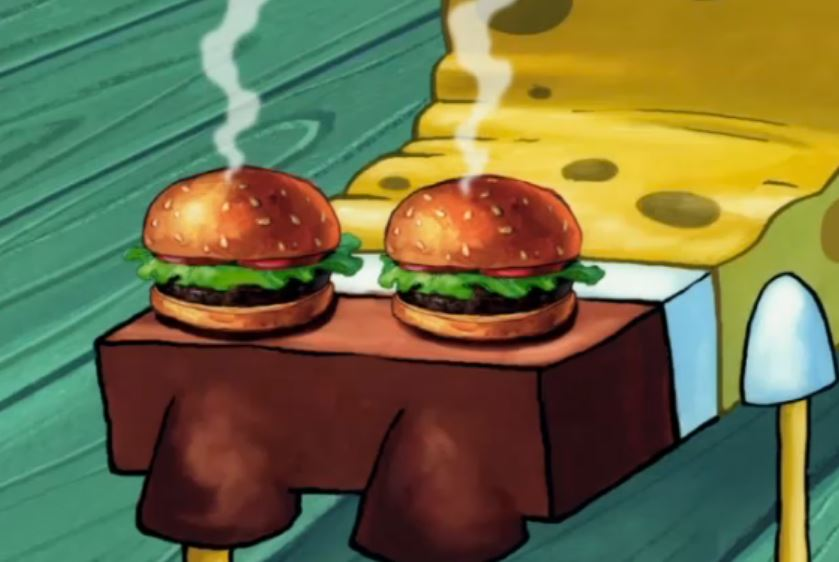

Krabby Patty from Spongebob Squarepants

Would you eat these Krabby Pattys?(Or is it Patties? I'm not sure...)
Sometimes, you gotta give the people what they want. Play the hits. Let them eat...double-batter-fried-quad-burgers. This week I'm sacrificing both my health *and* dignity to bring you a very accurate recreation of one of Spongebob's greatest hits. Do not try this at home.
Ingredients
- 1 lb. ground beef
- Salt
- Pepper
- Vegetable oil
- American cheese
- Lettuce
- Tomato
- Pickle
- Onion
- Burger sauce
- 1/2 cup corn starch
- 1/2 cup all purpose flour
- 1 tsp baking powder
- 1 tsp kosher salt
- 3/4 cup lager beer
- 1/4 cup vodka
- Bacon
- 2 quarts peanut oil
Directions
- Roll your ground beef into 2 ounce spheres. Season with salt and pepper.
- Add some vegetable oil to a cast iron skillet over high heat. Place two ground beef balls on the skillet. Use a cold metal spatula to press down on the meat, using a rolling pin (or something heavy) for leverage assistance.
- Cook until one side is nice and brown, then flip and cook for about 30 seconds before adding cheese. Stack patties on top of each other and then set aside. You will need a total of 2 double patties.
- Now build your burger. Bun on bottom followed by burgers and then top that with lettuce, tomato, pickles, onions, and special sauce. Repeat this again so you have a total of 4 burger patties and 3 buns. Place wooden skewers through the burger so it doesn’t fall apart.
- In a bowl combine cornstarch along with all purpose flour, baking powder, kosher salt, lager, and vodka. Whisk to combine. Coat the burger in batter.
- In a large pot, heat 2 quarts of peanut oil over medium high heat to 375°F.
- Place your battered burger in the peanut oil and fry for about 4-6 minutes. Remove and place on a wire rack to drip excess oil and to cool off. Remove wooden skewers.
- Dip burger in batter again and fry for another 4-6 minutes until evenly golden brown.
- Remove from the oil and place on a wire rack to cool and drip any excess oil.
- Add a stick, serve and enjoy!
Back to main page